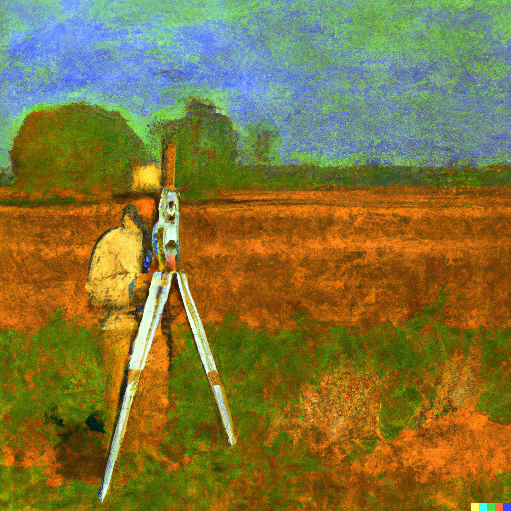
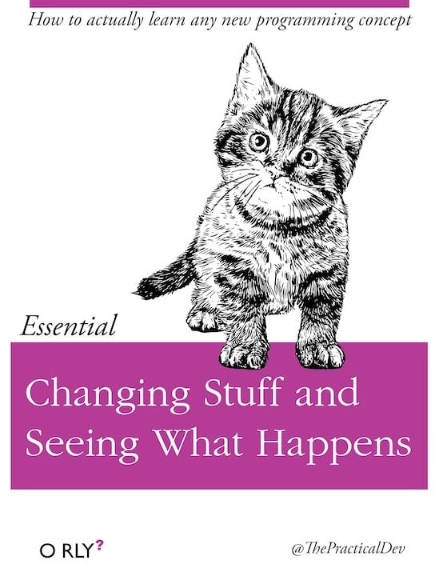
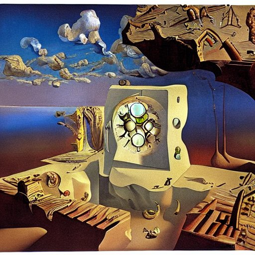

flowchart LR A((Execute)) --> B((Break)) B --> C((Reflect)) C --> A
Panduan Praktis Membangun WebGIS
Membangun WebGIS dengan NextJS dan Maplibre
Tentang Modul Ini
Modul singkat ini berisi panduan langkah-demi-langkah untuk membangun sebuah WebGIS: Aplikasi sistem informasi geospasial yang dapat diakses melalui media internet. Tentunya tidak semua konten geospasial yang diakses melalui media internet dapat kita sebut sebagai sebuah ‘WebGIS’ (lihat penjelasan singkat tentang ini di bab berikutnya). Selain itu, terdapat berbagai ragam bentuk dan jenis perangkat lunak yang dapat digunakan untuk membangun sebuah WebGIS. Pun demikian, tiap orang mungkin memiliki pemahaman yang berbeda mengenai apa dan bagaimana sebuah webGIS harus dibangun. Demikian luas cakupan istilah ‘WebGIS’ yang berkembang saat ini, sehingga kita dapat temukan padanannya dalam hampir segala bentuk sesuatu yang kita sebut sebagai ‘Internet’ itu sendiri.

Untuk itu, modul ini hanya akan menyajikan seiris panduan mengenai bagaimana membangun sebuah WebGIS. Modul ini akan memberikan panduan yang sangat opinionated dari sudut pandang penulis. Selain itu, modul ini juga hanya akan berfokus pada bagaimana membangun sebuah WebGIS. Anda tidak akan menjumpai banyak pembahasan teoritis di sini. Fokus dari modul ini adalah to get you started developing a webgis. Akan ada petunjuk di sana dan di sini tentang di mana Anda dapat menemukan pembahasan lebih lengkap tentang teori dari latihan yang dimaksud. Lihat pada sub-bab Bagaimana menggunakan modul ini? di bawah.
Prasyarat
Tidak ada prasyarat khusus untuk dapat mengikuti semua materi pada modul ini. Anda dapat langsung terjun mengikuti langkah-langkah yang terdapat pada modul ini satu-persatu sampai Anda dapat membangun WebGIS sendiri. Meskipun demikian, pengetahuan akan beberapa poin berikut diperlukan untuk membantu Anda dalam memahami apa sebenarnya yang terjadi di sana:
Dasar-dasar tentang elemen-elemen HTML dan Document Object Model (DOM) pada sebuah halaman web
Pengetahuan tentang hal ini akan membantu ketika Anda menggunakan React nantinya. Elemen-elemen pada React mengacu pada elemen-elemen HTML, sehingga sedikit banyak Anda perlu memahami hal tersebut sebelum menggunakannya.
Jenis dan maksud dari syntax bahasa CSS (Cascading Style Sheets)
Kita akan menggunakan Tailwind, sebuah framework yang digunakan untuk membangun Style berdasarkan syntax CSS. Pada saat menggunakan Tailwind, Anda akan terbantu dengan mengenali maksud dari syntax yang kita gunakan.
Prinsip-prinsip bahasa pemrograman, khususnya menggunakan Javascript
Barangkali tidak ada web modern yang tidak menggunakan Javascript. Kita akan menggunakan beberapa library Javascript seperti React dan NextJS, serta menggunakan mesin Javascript (NodeJS) untuk membangun webGIS nantinya. Library peta (WebMap) yang kita gunakan, MaplibreJS, juga merupakan salah satu framework berbasis Javascript.
Dasar-dasar Version Control System, khususnya Git dan Github
Sepanjang berbagai latihan pada modul ini, kita akan menggunakan Github untuk menyimpan kode yang kita buat, melakukan versioning, serta mempublikasikan hasil pekerjaan kita. Untuk itu, pengetahuan dasar tentang Git dan Github akan sangat membantu. Meskipun demikian, sedikit teori mengenai cara kerja Version Control System dan khususnya Git akan diberikan di bab selanjutnya sebagai pengantar.
Pengetahuan mengenai WebMap Library dan Slippy Map secara umum Data spasial dengan segala ke’spesial’annya, memerlukan penanganan khusus ketika disajikan melalui internet. Library WebMap dibangun dari Javascript untuk memudahkan data dan informasi ini ditampilkan di sebuah halaman web. Pemahaman mengenai Slippy map (bagaimana data geospasial disusun untuk ditampilkan di internet) akan menjadi modal yang berguna pada saat melaksanakan latihan-latihan ini.
Jangan Takut Memulai!
Jangan khawatir jika Anda merasa poin-poin di atas terdengar sangat asing. Dengan mengikuti langkah demi langkah, Anda akan menemukan konteks dari beberapa istilah tersebut pada modul ini. Kerjakan lebih dulu latihan yang diberikan, kemudian kembangkan perlahan. Bukankah belajar menyelam jadi mustahil jika Anda tidak berani sama sekali menyentuh air? 😁

Garis Besar Materi
Setelah menyelesaikan modul ini, Anda akan dapat membuat sebuah WebGIS yang kurang lebih terlihat seperti berikut: https://next-webgis.vercel.app/.
Kita akan membangun dari dasar sebuah WebGIS yang menampilkan peta dasar (basemap) dan data geospasial lain dalam bentuk vector tiles. Berikut adalah garis besar dari apa yang akan kita pelajari:
- Menyiapkan lingkungan development
- Menggunakan Github untuk Version Control System
- Membangun Web dengan NextJS
- Mengatur antarmuka Web dengan Tailwind
- Menggunakan MaplibreJS
- Mengatur dan menggunakan vector tiles
Karena bersifat ringkas, sangat mungkin apabila banyak terdapat materi yang diperlukan namun tidak tercakup pada modul ini. Untuk itu, pembaca disarankan untuk menggali secara mandiri dari sumber-sumber lain. Kontak penulis tertera pada bagian lain panduan ini apabila diperlukan diskusi lebih lanjut mengenai materi di dalam maupun di luar cakupan modul ini.
Bagaimana menggunakan modul ini?
Tentunya, cara tiap individu untuk belajar hal baru berbeda-beda. Gunakan pendekatan manapun yang menurut Anda paling sesuai (_ runtut, atau skimming, atau skipping_..). Salah satu cara belajar yang dapat Anda gunakan adalah seperti berikut:
Penjelasannya adalah sebagai berikut:
EXECUTE
Baca dan ikuti semua langkah-langkah yang ada pada tutorial tersebut. Kerjakan sedetil mungkin. Jangan khawatir apabila Anda merasa belum paham pada beberapa langkah. Lanjutkan saja, tetapi berikan batasan: entah berdasarkan waktu (misalnya, 20 menit) atau berdasarkan tahap tertentu pada tutorial tersebut, kemudian lanjutkan lagi ke tahap BREAK di bawah ini.
Pada satu titik, mungkin Anda merasa telah mengikuti seluruh panduan yang ada dengan benar, namun Anda tetap tidak dapat melanjutkannya karena menjumpai error. Pada titik ini, lanjutkan ke tahap BREAK.
BREAK
Break di sini lebih tepat jika tidak diterjemahkan dengan ‘beristirahat’, akan tetapi ‘rusak’. Pada titik dimana Anda berhenti meng-eksekusi tutorial (baik karena error ataupun berhasil sampai pada titik tertentu), rubahlah bagian-bagian kode yang telah Anda ikuti dengan baik ini.
Jika Anda berhenti meng-eksekusi karena error, inilah saat untuk melakukan debugging. Cari tahu apa yang menyebabkan program tersebut mengalami error. Luangkan waktu sebanyak mungkin
Jika Anda berhenti meng-eksekusi setelah sampai pada tahap atau batasan waktu tertentu, luangkan waktu (misalnya 10 menit) untuk merubah kode yang telah membuat Anda sampai pada titik tersebut. Ganti beberapa parameter, misalnya, atau lakukan perubahan pada urutan kode, atau lainnya. Dengan demikian, Anda benar-benar akan paham apa yang terjadi pada kode Anda tersebut.
Pastikan bahwa Anda memiliki salinan dari kode sebelum Anda melakukan modifikasi. Version Control System (VCS) yang akan kita bahas di bab berikutnya dapat digunakan untuk keperluan ini.
REFLECT
Investigasi: apa yang berubah setelah kode dimodifikasi? Tahap ini adalah tahap enrichment: Anda dapat melakukan browsing untuk mencari tahu lebih jauh, misalnya, tentang bagian kode tertentu yang terdapat pada tutorial yang sudah Anda ikuti. Anda juga dapat mencari variasi dari algoritma atau penjelasan teori yang lebih mendalam.
Sekali lagi, batasi waktu untuk eksplorasi, dan setelah selesai, kembali pada point ‘EXECUTE’ dan teruskan tutorial yang Anda ikuti sampai selesai.
Sedikit tips untuk mengatur waktu
Aplikasi seperti Pomodoro (misalnya, https://pomofocus.io/) dapat membantu Anda untuk mengatur waktu sambil tetap memperhatikan kapan kita mampu untuk tetap fokus. Karena terbatasnya Attention Span kita, tetap luangkan waktu untuk beristirahat sejenak diantara siklus di atas.
Ada banyak varian dari metode Pomodoro ini, misalnya seperti ForestApp.
Tentu, ini hanya salah satu pendekatan saja. Gunakan zona belajar yang menurut Anda paling nyaman, dan rutinkan hal tersebut. Selamat belajar!

Selanjutnya Apa?

Jangan terjebak pada “Tutorial Hell”!
Setelah Anda menyelesaikan satu tutorial, fokuslah untuk banyak-banyak berlatih dan menghasilkan produk ketimbang terus-menerus mengikuti berbagai tutorial yang sama. Cobalah untuk membangun sendiri sebuah produk yang Anda inginkan. Rancang, Kerjakan, dan Publikasikan!
Memiliki satu proyek kecil tiap minggu (‘Weekend Projects’) akan sangat membantu. Tidak harus sebuah proyek besar. Cukup bagian kecil dari tutorial yang Anda ikuti, misalnya. Kata-kata ‘Practice Makes Perfect’ mungkin terdengar klasik, but it works.
Tentang Ilustrasi
Ilustasi pada modul ini dibuat menggunakan AI: Midjourney, Stable Diffusion, Dreamlike Diffusion dan Dall-E. Caption pada gambar-gambar ilustrasi tersebut merupakan prompt yang diberikan pada model AI untuk menghasilkan gambar-gambar ini.
Lisensi
Modul ini berada di bawah lisensi CC BY-SA 4.0.
Citation
BibTeX citation:
@online{laksono2022,
author = {Laksono, Dany},
title = {Panduan {Praktis} {Membangun} {WebGIS}},
date = {2022-11-12},
url = {https://github.com/danylaksono/panduan-nextwebgis},
langid = {en}
}
For attribution, please cite this work as:
Laksono, Dany. 2022. “Panduan Praktis Membangun WebGIS.”
November 12, 2022. https://github.com/danylaksono/panduan-nextwebgis.